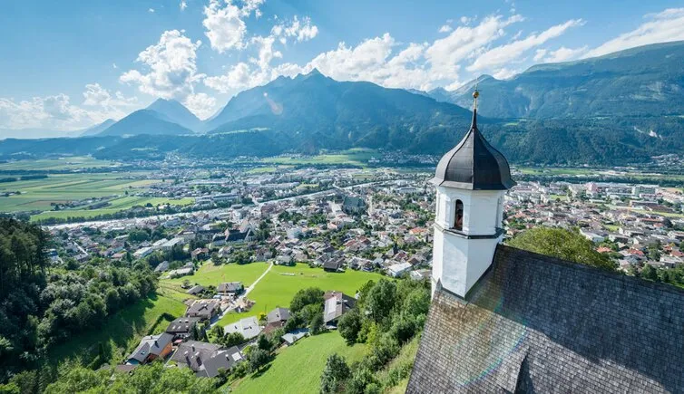

Dag 0 · Maandag 17 augustus
Acclimatisatiedag
Rustig inwandelen op hoogte voor we de hütten in trekken. Nog niet besloten welke route het wordt — twee opties liggen op tafel:
Dag 1 · Dinsdag 18 augustus

Naar Karwendelhaus
De volledige route van vandaag, richting Karwendelhaus op 1.765 m.
15,5 km
Afstand
650 m
Stijgen
40 m
Dalen
4u35
Tijd
Dag 2 · Woensdag 19 augustus

Naar Falkenhütte
De volledige route van vandaag, richting Falkenhütte op 1.848 m, voor de Laliderer Wände.
8,9 km
Afstand
500 m
Stijgen
410 m
Dalen
3u19
Tijd
Dag 3 · Donderdag 20 augustus

Naar Lamsenjochhütte
De hoogste etappe, richting Lamsenjochhütte op 1.953 m.
12,3 km
Afstand
840 m
Stijgen
730 m
Dalen
4u53
Tijd
Dag 4 · Vrijdag 21 augustus
Naar Schwaz
De laatste etappe: de afdaling van Lamsenjochhütte terug het Inntal in, naar Schwaz — het eindpunt van onze hüttentocht.

11,8 km
Afstand
0 m
Stijgen
1.410 m
Dalen
4u05
Tijd